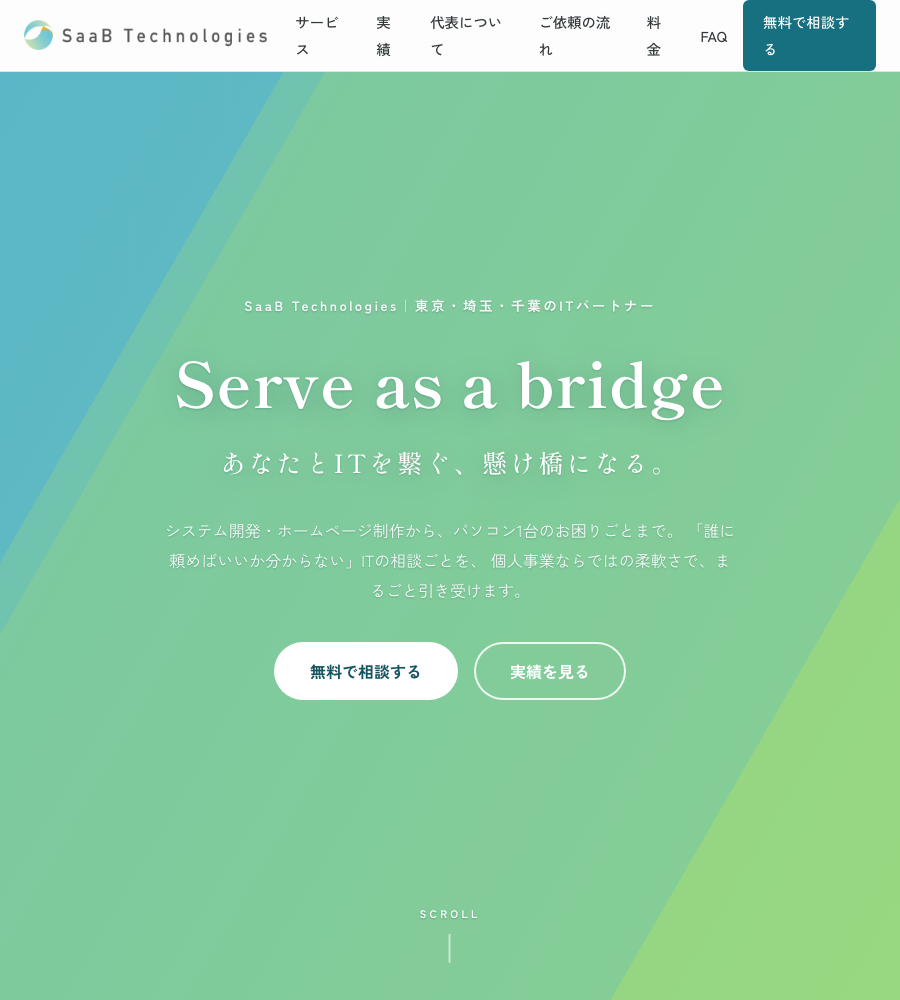
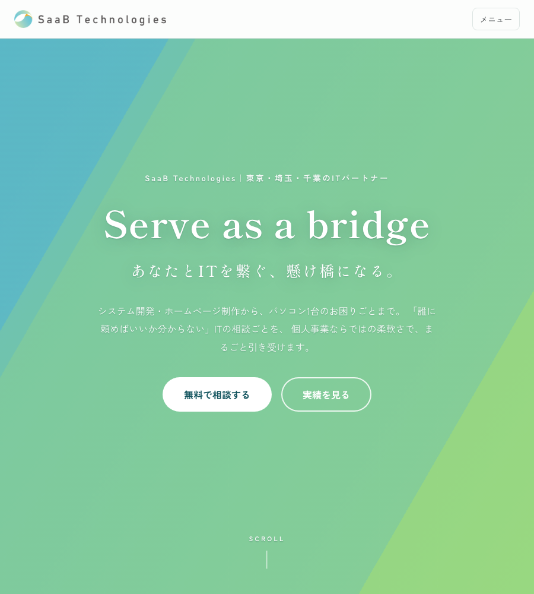
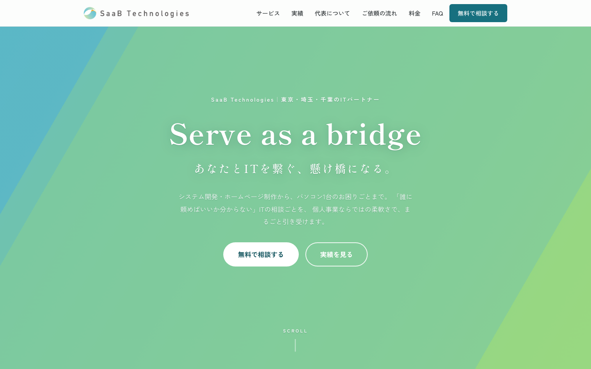

タブレット幅：900px
今回の主な見た目の改善です。Beforeではナビが収まらず2行になります。


デスクトップ幅：1440px
Fable5版のデザインを維持する方針なので、通常表示はほぼ同じです。

左がBefore、右が現在の未コミット版です。すべて同一条件で撮影しています。
今回の主な見た目の改善です。Beforeではナビが収まらず2行になります。


Fable5版のデザインを維持する方針なので、通常表示はほぼ同じです。
